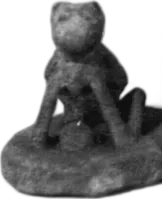
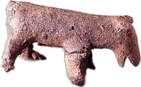
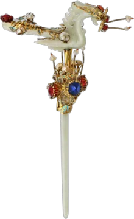

여섯 판을
두루마리처럼
판마다 실제 전통의 순서를 그대로 옮겼습니다. 판을 깨면 그 판과 뜻이 닿는 유물이 보따리에 들어 있습니다.
왜 판마다 유물이 다른가요?놀며 익힌 것을 진짜 물건으로 다시 만나게 하려고, 판의 주제와 맞는 유물이 나오게 했습니다.
진법

첫째 판
풍물·강강술래의 대형
여럿이 한 몸처럼 움직이던 대형을 직접 짜며 함께 맞추는 힘을 익힙니다.
받는 유물칼·창·투구·북
인쇄

둘째 판
훈민정음 · 인쇄
소리 나는 입 모양을 본뜬 원리대로 글자를 짓고, 새기고, 찍습니다.
받는 유물도장·벼루·먹·연적
놀이

셋째 판
전래놀이 열두 가지
만든 사람이 10년 넘게 아이들과 해 온 놀이를 손끝으로 옮겼습니다.
받는 유물흙 인형·주사위·놀잇감
한글

넷째 판
한글 테트리스
자음·모음 블록을 쌓으며 한 글자가 짜이는 원리를 익힙니다.
받는 유물기와·막새·전돌
탈춤

다섯째 판
굿거리·타령 장단
장단의 큰 박에 맞춰 한삼을 뿌리며 박자를 몸으로 익힙니다.
받는 유물탈·노리개·비녀
단청

여섯째 판
가칠 → 타분 → 오색 → 분선
단청장의 실제 작업 순서를 따라가며 오색의 뜻을 익힙니다.
받는 유물청자·백자·분청